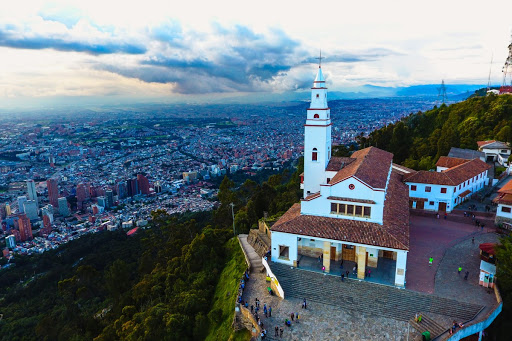

HISTORIA DE BOGOTÁ
Aquí encontrarás un resumen breve, pero en el video de este enlace podrás ver más sobre esta fantástica ciudad y su historia
Era precolombina: chibchas y muiscas
Bogotá en tiempos precolombinos, fue habitada por los indígenas de las culturas Chibchas y Muiscas quienes practicaban la agricultura y la pesca en esta enorme extensión de tierras.
La colonia: en busca del dorado

El descubrimiento del Nuevo Mundo y las leyendas de ciudades con grandes tesoros, trajo consigo que muchos exploradores, entre estos el conquistador Gonzalo Jiménez de Quesada se encaminara en la búsqueda de la ciudad legendaria El Dorado. De esta manera, Jiménez de Quesada sería el encargado de fundar una pequeña villa la cual fue bautizada con el nombre de Santa Fe de Bacatá.
Independencia y Gran Colombia
En el año 1819, Simón Bolívar designó ésta misma ciudad como la capital de la Gran Colombia, país que estaría conformado por los actuales Panamá, Colombia, Ecuador y Venezuela.
La Bogotá actual
